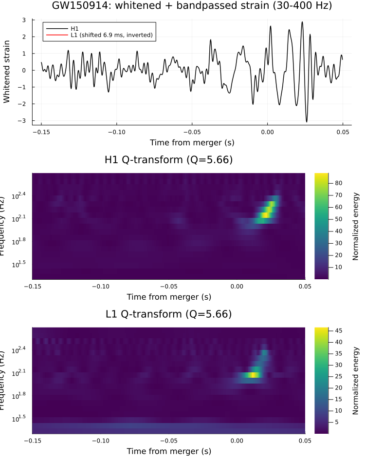

Capstone: GW150914
Every earlier tutorial in this site builds one piece of a gravitational-wave detection pipeline in isolation: Filtering & Whitening turns noise-dominated raw strain into a visible "chirp", and Q-transform turns the same data into the time-frequency track that is the single most recognizable image in gravitational-wave astronomy. This capstone combines both, end to end, on real two-detector data around GW150914 to reproduce, as closely as this package's current API allows, Figure 1 of Abbott et al. (2016), the LIGO-Virgo discovery paper: a whitened, bandpassed strain comparison between LIGO-Hanford (H1) and LIGO-Livingston (L1), stacked above each detector's own Q-transform of the same event.
This page assumes the Filtering & Whitening and Q-transform tutorials for the why and how of each individual step – bandpass/whiten's inverse-spectrum-truncation algorithm, q_transform's multi-Q search – and only briefly recaps them here. The payoff of this page is entirely in the combination.
using GravitationalWaveData
using Plots
gr()Plots.GRBackend()Fetching two-detector data
The same standard 4096 s off-source segment covering GW150914, this time for both LIGO sites, fetched live from GWOSC via fetch_open_data (cached locally under ~/.cache/gravitationalwavedata/strain – both files are already cached from earlier tutorials in this docs build, notably Coherence & CSD, which also uses this H1/L1 pair):
gps_start, gps_end = 1126256640, 1126260736
gps_merger = 1126259462.4 # GW150914 merger GPS time
h1_path = fetch_open_data("H1", gps_start, gps_end)
l1_path = fetch_open_data("L1", gps_start, gps_end)
h1_full, _ = load_gwosc_strain(h1_path)
l1_full, _ = load_gwosc_strain(l1_path)(TimeSeries{Float64}(16777216 samples, t0=1.12625664e9, dt=0.000244140625, duration=4096.0s, name="strain"), TimeSeries{UInt32}(4096 samples, t0=1.12625664e9, dt=1.0, duration=4096.0s, name="DQmask"))As the Coherence & CSD tutorial and docs/CONVENTIONS.md both note, this particular L1 file has a real NaN gap in its first ~190 s (pre-lock data, well before GW150914). whiten mean-detrends its entire input in one pass – a single NaN anywhere in that input poisons the mean, and hence every output sample, not just the samples near the gap. GW150914's merger sits about 2822 s into this segment, far past the gap itself, so the fix is simply to crop down to a window around the merger before whitening, rather than whitening the full 4096 s series the way the single-detector Filtering & Whitening tutorial does for H1 (whose file has no such gap). ASD estimation is unaffected: asd's median-Welch averaging (see docs/CONVENTIONS.md) only needs more than half of a given frequency bin's segments to be finite to return a clean result, and the gap contaminates well under 5% of segments here, so it's safe to estimate each detector's ASD from the full raw file:
seglen = round(Int, 4 * sample_rate(h1_full)) # 4 s Welch segments, matching 03/09's convention
h1_asd = asd(h1_full; seglen=seglen)
l1_asd = asd(l1_full; seglen=seglen)FrequencySeries{Float64}(8193 bins, f0=0.0, df=0.25, name="strain ASD")Now crop both detectors to the same 16 s window around the merger – the same window Q-transform uses – which conveniently sits nowhere near L1's gap:
seg_pad = 8.0
h1_seg = crop(h1_full, gps_merger - seg_pad, gps_merger + seg_pad)
l1_seg = crop(l1_full, gps_merger - seg_pad, gps_merger + seg_pad)
count(isnan, h1_seg.data), count(isnan, l1_seg.data) # (0, 0) -- confirms the crop cleared the gap(0, 0)Whitening and bandpassing: the chirp, in both detectors
whiten against each detector's own ASD, then bandpass to the same 30-400 Hz band the Filtering & Whitening tutorial settles on for H1 – the combination behind the top panel of Figure 1 in Abbott et al. (2016):
h1_white = whiten(h1_seg, h1_asd; highpass=20.0)
l1_white = whiten(l1_seg, l1_asd; highpass=20.0)
h1_chirp = bandpass(h1_white, 30.0, 400.0)
l1_chirp = bandpass(l1_white, 30.0, 400.0)TimeSeries{Float64}(65536 samples, t0=1.1262594543999023e9, dt=0.000244140625, duration=16.0s, name="strain")Comparing the two detectors directly needs one more correction. As Abbott et al. (2016) reports, GW150914 arrived at the two sites about 6.9 ms apart, and the detectors' relative orientation on Earth means one channel's signal is inverted relative to the other. The standard figure applies this correction (shift L1 by 6.9 ms and flip its sign) purely to overlay the two traces on one time axis for the figure – it has no effect on either detector's own data. GravitationalWaveData.jl has no shift method yet, but a TimeSeries is just data/t0/dt/name, so the same correction is one direct construction:
l1_aligned = TimeSeries(-1 .* l1_chirp.data, l1_chirp.t0 + 0.0069, l1_chirp.dt; name=l1_chirp.name)TimeSeries{Float64}(65536 samples, t0=1.1262594544068024e9, dt=0.000244140625, duration=16.0s, name="strain")Q-transforms: the chirp, in time-frequency
q_transform works on the un-whitened 16 s crop directly (it computes its own normalized FFT internally – see Q-transform for why whitening isn't wired into it), restricted to the same 20-500 Hz band and merger-straddling peak search that tutorial uses, run once per detector:
h1_scan, h1_peak = q_transform(h1_seg; frange=(20.0, 500.0),
search=(gps_merger - 0.2, gps_merger + 0.1))
l1_scan, l1_peak = q_transform(l1_seg; frange=(20.0, 500.0),
search=(gps_merger - 0.2, gps_merger + 0.1))
(h1_peak.time - gps_merger, h1_peak.frequency, h1_peak.q), (l1_peak.time - gps_merger, l1_peak.frequency, l1_peak.q)((0.02138662338256836, 140.3125, 5.65685424949238), (0.01162099838256836, 118.4375, 5.65685424949238))Each detector's Q-search independently locks onto a tile within milliseconds of the known merger time, at a similar Q – a good cross-detector sanity check that this isn't a single-channel fluke. The peak times aren't expected to reproduce the literature's 6.9 ms inter-site delay to high precision here (each Q-plane row has its own, fairly coarse, time sampling – see QScan's docstring), but they land in the same few-millisecond ballpark:
abs(h1_peak.time - l1_peak.time)0.009765625As in Q-transform, scan.rows holds each Q-plane's raw energy grid at its own per-row time resolution; the same small linear-interpolation helper from that tutorial resamples each detector's rows onto one shared time grid for a heatmap:
function _lininterp(xs, ys, x)
x <= xs[1] && return ys[1]
x >= xs[end] && return ys[end]
i = searchsortedlast(xs, x)
x0, x1 = xs[i], xs[i + 1]
y0, y1 = ys[i], ys[i + 1]
return y0 + (y1 - y0) * (x - x0) / (x1 - x0)
end
function qscan_grid(scan, tlo, thi; ntime=400)
common_times = range(tlo, thi; length=ntime)
freqs = [row.frequency for row in scan.rows]
z = Array{Float64}(undef, length(scan.rows), ntime)
for (i, row) in enumerate(scan.rows)
n = length(row.energy)
row_times = row.t0 .+ row.dt .* (0:(n - 1))
z[i, :] .= [_lininterp(row_times, row.energy, t) for t in common_times]
end
return collect(common_times), freqs, z
end
zoom_lo, zoom_hi = gps_merger - 0.15, gps_merger + 0.05
h1_grid_times, h1_freqs, h1_energy = qscan_grid(h1_scan, zoom_lo, zoom_hi)
l1_grid_times, l1_freqs, l1_energy = qscan_grid(l1_scan, zoom_lo, zoom_hi)
h1_grid_rel = h1_grid_times .- gps_merger
l1_grid_rel = l1_grid_times .- gps_merger;The combined figure
Three panels, each built as its own Plot object and suppressed with a trailing ; so it isn't displayed on its own (per the Documenter @example-block duplicate-render trap – see the Plotting Recipes tutorial), then composed with layout=(3, 1): the whitened-and-bandpassed time-domain chirp for both detectors on top, each detector's own Q-transform time-frequency track below it – echoing Figure 1 of Abbott et al. (2016).
h1_zoom = crop(h1_chirp, zoom_lo, zoom_hi)
l1_zoom = crop(l1_aligned, zoom_lo, zoom_hi)
h1_zoom_rel = collect(times(h1_zoom)) .- gps_merger
l1_zoom_rel = collect(times(l1_zoom)) .- gps_merger
p_chirp = plot(h1_zoom_rel, h1_zoom.data;
xlabel="Time from merger (s)", ylabel="Whitened strain", label="H1",
color=:black, linewidth=1.5,
title="GW150914: whitened + bandpassed strain (30-400 Hz)");
plot!(p_chirp, l1_zoom_rel, l1_zoom.data;
xlabel="Time from merger (s)", ylabel="Whitened strain",
label="L1 (shifted 6.9 ms, inverted)", color=:red, linewidth=1.5);
p_h1q = heatmap(h1_grid_rel, h1_freqs, h1_energy;
xlabel="Time from merger (s)", ylabel="Frequency (Hz)", yscale=:log10,
colorbar_title="Normalized energy", color=:viridis,
title="H1 Q-transform (Q=$(round(h1_peak.q; digits=2)))");
p_l1q = heatmap(l1_grid_rel, l1_freqs, l1_energy;
xlabel="Time from merger (s)", ylabel="Frequency (Hz)", yscale=:log10,
colorbar_title="Normalized energy", color=:viridis,
title="L1 Q-transform (Q=$(round(l1_peak.q; digits=2)))");
plot(p_chirp, p_h1q, p_l1q; layout=(3, 1), size=(750, 950))
The top panel shows the same rising-amplitude, rising-frequency "chirp" the Filtering & Whitening tutorial found in H1 alone, now visibly consistent between two independent, geographically separated detectors once L1's arrival-time offset and inverted orientation are accounted for. The two bottom panels show the same event as an upward-sweeping time-frequency track in each detector's own Q-transform, peaking within milliseconds of the same merger time found in the time domain. Two independent detectors, independently analyzed with two independent techniques (whitened time-domain filtering and a constant-Q time-frequency transform), agreeing on the same transient at the same GPS time is exactly the kind of consistency check that turned GW150914 from "an interesting blip" into the first direct detection of gravitational waves.
This page was generated using Literate.jl.